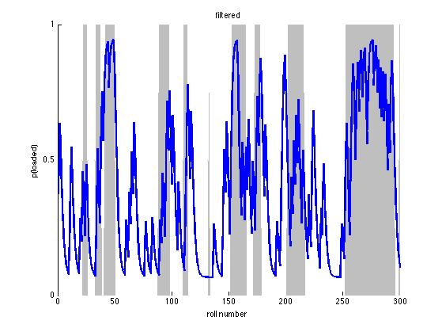
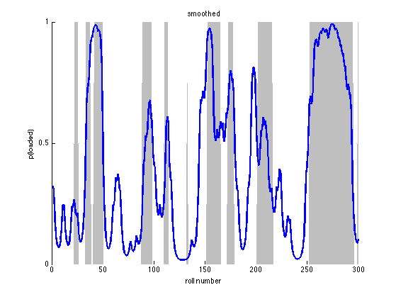
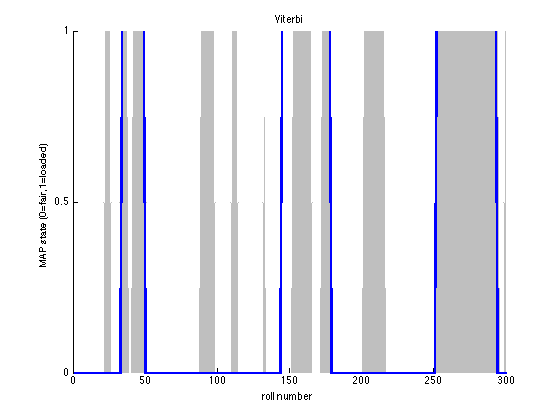

HMMs and the occasionally Dishonest Casino
This is an example from 'Biological Sequence Analysis: Probabilistic Models Proteins and Nucleic Acids' by Durbin, Eddy, Krogh, & Mitchison, (1998) p54.
Contents
Description
Suppose a casino uses a fair die most of the time but occasionally switches to and from a loaded die according to Markovian dynamics. We observe the dice rolls but not the type of die. We can use a Hidden Markov Model to predict which die is being used at any given point in a sequence of rolls. In this example, we know both the transition and emission probabilities.
Specifying the Model
Since we are not learning the parameters, we must specify the observation/emission model, the transition matrix, and the distribution over starting states.
% This file is from pmtk3.googlecode.com
fair = 1; loaded = 2;
Observation Model
We will use a discrete observation model, one discrete distribution per hidden state of which there are two.
setSeed(1); obsModel = [1/6 , 1/6 , 1/6 , 1/6 , 1/6 , 1/6 ; % fair die 1/10, 1/10, 1/10, 1/10, 1/10, 5/10 ]; % loaded die
Transition Matrix
transmat = [0.95 , 0.05;
0.10 , 0.90];
Distribution over Starting States
pi = [0.5, 0.5];
Sample
We now sample a single sequence of 300 dice rolls
len = 300; nsamples = 1; markov.pi = pi; markov.A = transmat; hidden = markovSample(markov, len, nsamples); observed = zeros(1, len); for t=1:len observed(1, t) = sampleDiscrete(obsModel(hidden(t), :)); end
Fit via EM (pretending we don't know the hidden states)
nstates = size(obsModel, 1); modelEM = hmmFit(observed, nstates, 'discrete', ... 'maxIter', 1000, 'verbose', true, 'convTol', 1e-7, 'nRandomRestarts', 3);
********** Random Restart 1 ********** initializing model for EM 1 loglik: -527.925 2 loglik: -524.687 3 loglik: -524.565 4 loglik: -524.466 5 loglik: -524.379 6 loglik: -524.302 7 loglik: -524.233 8 loglik: -524.17 9 loglik: -524.113 10 loglik: -524.061 11 loglik: -524.012 12 loglik: -523.968 13 loglik: -523.927 14 loglik: -523.888 15 loglik: -523.852 16 loglik: -523.817 17 loglik: -523.785 18 loglik: -523.754 19 loglik: -523.724 20 loglik: -523.695 21 loglik: -523.666 22 loglik: -523.638 23 loglik: -523.61 24 loglik: -523.581 25 loglik: -523.553 26 loglik: -523.524 27 loglik: -523.493 28 loglik: -523.462 29 loglik: -523.428 30 loglik: -523.393 31 loglik: -523.355 32 loglik: -523.314 33 loglik: -523.269 34 loglik: -523.219 35 loglik: -523.164 36 loglik: -523.101 37 loglik: -523.03 38 loglik: -522.948 39 loglik: -522.854 40 loglik: -522.744 41 loglik: -522.616 42 loglik: -522.466 43 loglik: -522.29 44 loglik: -522.084 45 loglik: -521.845 46 loglik: -521.568 47 loglik: -521.25 48 loglik: -520.889 49 loglik: -520.482 50 loglik: -520.03 51 loglik: -519.54 52 loglik: -519.029 53 loglik: -518.527 54 loglik: -518.072 55 loglik: -517.691 56 loglik: -517.388 57 loglik: -517.149 58 loglik: -516.954 59 loglik: -516.786 60 loglik: -516.635 61 loglik: -516.494 62 loglik: -516.36 63 loglik: -516.231 64 loglik: -516.108 65 loglik: -515.99 66 loglik: -515.876 67 loglik: -515.767 68 loglik: -515.663 69 loglik: -515.564 70 loglik: -515.469 71 loglik: -515.38 72 loglik: -515.296 73 loglik: -515.217 74 loglik: -515.144 75 loglik: -515.075 76 loglik: -515.011 77 loglik: -514.953 78 loglik: -514.899 79 loglik: -514.851 80 loglik: -514.807 81 loglik: -514.768 82 loglik: -514.734 83 loglik: -514.705 84 loglik: -514.679 85 loglik: -514.658 86 loglik: -514.641 87 loglik: -514.626 88 loglik: -514.614 89 loglik: -514.605 90 loglik: -514.598 91 loglik: -514.592 92 loglik: -514.587 93 loglik: -514.584 94 loglik: -514.581 95 loglik: -514.579 96 loglik: -514.577 97 loglik: -514.576 98 loglik: -514.575 99 loglik: -514.575 100 loglik: -514.574 101 loglik: -514.574 102 loglik: -514.574 103 loglik: -514.573 104 loglik: -514.573 105 loglik: -514.573 106 loglik: -514.573 107 loglik: -514.573 108 loglik: -514.573 ********** Random Restart 2 ********** initializing model for EM 1 loglik: -567.7 2 loglik: -524.177 3 loglik: -523.961 4 loglik: -523.786 5 loglik: -523.625 6 loglik: -523.463 7 loglik: -523.29 8 loglik: -523.098 9 loglik: -522.878 10 loglik: -522.621 11 loglik: -522.319 12 loglik: -521.962 13 loglik: -521.539 14 loglik: -521.04 15 loglik: -520.459 16 loglik: -519.805 17 loglik: -519.116 18 loglik: -518.46 19 loglik: -517.905 20 loglik: -517.479 21 loglik: -517.167 22 loglik: -516.93 23 loglik: -516.737 24 loglik: -516.568 25 loglik: -516.414 26 loglik: -516.271 27 loglik: -516.136 28 loglik: -516.009 29 loglik: -515.889 30 loglik: -515.775 31 loglik: -515.668 32 loglik: -515.567 33 loglik: -515.472 34 loglik: -515.382 35 loglik: -515.298 36 loglik: -515.218 37 loglik: -515.144 38 loglik: -515.074 39 loglik: -515.01 40 loglik: -514.95 41 loglik: -514.895 42 loglik: -514.846 43 loglik: -514.802 44 loglik: -514.762 45 loglik: -514.728 46 loglik: -514.699 47 loglik: -514.674 48 loglik: -514.653 49 loglik: -514.636 50 loglik: -514.622 51 loglik: -514.611 52 loglik: -514.602 53 loglik: -514.595 54 loglik: -514.59 55 loglik: -514.586 56 loglik: -514.583 57 loglik: -514.58 58 loglik: -514.578 59 loglik: -514.577 60 loglik: -514.576 61 loglik: -514.575 62 loglik: -514.574 63 loglik: -514.574 64 loglik: -514.574 65 loglik: -514.573 66 loglik: -514.573 67 loglik: -514.573 68 loglik: -514.573 69 loglik: -514.573 70 loglik: -514.573 71 loglik: -514.573 ********** Random Restart 3 ********** initializing model for EM 1 loglik: -611.636 2 loglik: -523.619 3 loglik: -522.059 4 loglik: -520.599 5 loglik: -519.07 6 loglik: -517.658 7 loglik: -516.612 8 loglik: -515.975 9 loglik: -515.619 10 loglik: -515.412 11 loglik: -515.275 12 loglik: -515.171 13 loglik: -515.084 14 loglik: -515.009 15 loglik: -514.942 16 loglik: -514.882 17 loglik: -514.83 18 loglik: -514.784 19 loglik: -514.744 20 loglik: -514.71 21 loglik: -514.682 22 loglik: -514.659 23 loglik: -514.64 24 loglik: -514.625 25 loglik: -514.613 26 loglik: -514.603 27 loglik: -514.596 28 loglik: -514.59 29 loglik: -514.586 30 loglik: -514.583 31 loglik: -514.58 32 loglik: -514.578 33 loglik: -514.577 34 loglik: -514.576 35 loglik: -514.575 36 loglik: -514.575 37 loglik: -514.574 38 loglik: -514.574 39 loglik: -514.573 40 loglik: -514.573 41 loglik: -514.573 42 loglik: -514.573 43 loglik: -514.573 44 loglik: -514.573 45 loglik: -514.573
Viterbi Path
We can now try and recover the most likely sequence of hidden states, the Viterbi path.
model.nObsStates = size(obsModel, 2);
model.emission = tabularCpdCreate(obsModel);
model.nstates = nstates;
model.pi = pi;
model.A = transmat;
model.type = 'discrete';
viterbiPath = hmmMap(model, observed);
Do the same thing with a dgm
dgm = hmmToDgm(model, len);
viterbiPathDGM = dgmMap(dgm, 'localev', observed);
assert(isequal(viterbiPath, viterbiPathDGM));
Sequence of Most Likely States (Max Marginals)
[gamma, loglik, alpha, beta, localEvidence] = hmmInferNodes(model, observed); maxmargF = maxidx(alpha); % filtered (forwards pass only) maxmarg = maxidx(gamma); % smoothed (forwards backwards)
Posterior Samples
We can also sample from the posterior, fowards filtering, backwards sampling, and compare the mode of these samples to the predictions above.
postSamp = mode(hmmSamplePost(model, observed, 100), 2)';
We now display the rolls, the corresponding die used and the Viterbi prediction.
die = hidden;
rolls = observed;
dielabel = repmat('F',size(die));
dielabel(die == 2) = 'L';
vitlabel = repmat('F',size(viterbiPath));
vitlabel(viterbiPath == 2) = 'L';
maxmarglabel = repmat('F',size(maxmarg));
maxmarglabel(maxmarg == 2) = 'L';
postsamplabel = repmat('F',size(postSamp));
postsamplabel(postSamp == 2) = 'L';
rollLabel = num2str(rolls);
rollLabel(rollLabel == ' ') = [];
for i=1:60:300
fprintf('Rolls:\t %s\n',rollLabel(i:i+59));
fprintf('Die:\t %s\n',dielabel(i:i+59));
fprintf('Viterbi: %s\n',vitlabel(i:i+59));
fprintf('MaxMarg: %s\n',maxmarglabel(i:i+59));
fprintf('PostSamp: %s\n\n',postsamplabel(i:i+59));
end
Rolls: 565413324266212352263632651444153661466466661666615522435356 Die: FFFFFFFFFFFFFFFFFFFFFLLLLLFFFFFFLLLLLLFFLLLLLLLLLLFFFFFFFFFF Viterbi: FFFFFFFFFFFFFFFFFFFFFFFFFFFFFFFFFLLLLLLLLLLLLLLLLFFFFFFFFFFF MaxMarg: FFFFFFFFFFFFFFFFFFFFFFFFFFFFFFFFFLLLLLLLLLLLLLLLLFFFFFFFFFFF PostSamp: FFFFFFFFFFFFFFFFFFFFFFFFFFFFFFFFFLLLLLLLLLLLLLLLLFFFFFFFFFFF Rolls: 216464644131151365523462225516363166464465153622152666536354 Die: FFFFFFFFFFFFFFFFFFFFFFFFFFFLLLLLLLLLLLFFFFFFFFFFFLLLLLFFFFFF Viterbi: FFFFFFFFFFFFFFFFFFFFFFFFFFFFFFFFFFFFFFFFFFFFFFFFFFFFFFFFFFFF MaxMarg: FFFFFFFFFFFFFFFFFFFFFFFFFFFFFFFLLLLLLLFFFFFFFFFFFFFLLLFFFFFF PostSamp: FFFFFFFFFFFFFFFFFFFFFFFFFFFFFFFLLLLLLLFFFFFFFFFFFFFLLLFFFFFF Rolls: 111131153535535361514141665611266666653226236262426456616614 Die: FFFFFFFFFFFLLFFFFFFFFFFFFFFFFFFLLLLLLLLLLLLLLFFFFFFLLLLLLLFF Viterbi: FFFFFFFFFFFFFFFFFFFFFFFFLLLLLLLLLLLLLLLLLLLLLLLLLLLLLLLLLLFF MaxMarg: FFFFFFFFFFFFFFFFFFFFFFFFLLLLLLLLLLLLLLLLLLLLLLLLLLLLLLLLLLFF PostSamp: FFFFFFFFFFFFFFFFFFFFFFFFLLLLLLLLLLLLLLLFFFFFLFLFFLLLLLLLLLLF Rolls: 264534214246323666621342656263641365424654664111336265545313 Die: FFFFFFFFFFFFFFFFFFFFLLLLLLLLLLLLLLLLFFFFFFFFFFFFFFFFFFFFFFFF Viterbi: FFFFFFFFFFFFFFFFFFFFFFFFFFFFFFFFFFFFFFFFFFFFFFFFFFFFFFFFFFFF MaxMarg: FFFFFFFFFFFFFFLLLLLLFFFFLLLLLLLFFFFFFFFFFFFFFFFFFFFFFFFFFFFF PostSamp: FFFFFFFFFFFFFFLLLLLLFFFFLLLLLLLFFFFFFFFFFFFFFFFFFFFFFFFFFFFF Rolls: 353311526236652466621661665661566666366462636564364663321312 Die: FFFFFFFFFFFLLLLLLLLLLLLLLLLLLLLLLLLLLLLLLLLLLLLLLLLLLLLFFFLL Viterbi: FFFFFFFFFFFLLLLLLLLLLLLLLLLLLLLLLLLLLLLLLLLLLLLLLLLLLFFFFFFF MaxMarg: FFFFFFFFFFFLLLLLLLLLLLLLLLLLLLLLLLLLLLLLLLLLLLLLLLLLLFFFFFFF PostSamp: FFFFFFFFFFLLLLLLLLLLLLLLLLLLLLLLLLLLLLLLLLLLLLLLLLLLLFFFFFFF
viterbiErr = sum(viterbiPath ~= die); maxMargSErr = sum(maxmarg ~= die); maxMargFErr = sum(maxmargF~=die); postSampErr = sum(postSamp ~= die); fprintf('\nNumber of Errors\n'); fprintf('Viterbi:\t\t\t\t%d/%d\n',viterbiErr,300); fprintf('Max Marginal Smoothed: %d/%d\n',maxMargSErr,300); fprintf('Max Marginal Filtered: %d/%d\n',maxMargFErr,300); fprintf('Mode Posterior Samples: %d/%d\n',postSampErr,300);
Number of Errors Viterbi: 60/300 Max Marginal Smoothed: 49/300 Max Marginal Filtered: 71/300 Mode Posterior Samples: 53/300
Here we plot the probabilities and shade in grey the portions of the die sequence where a loaded die was actually used.
figure; hold on; % fair=1, loaded=2. So die-1=0 for fair, so gray=loaded area(die-1,'FaceColor',0.75*ones(1,3),'EdgeColor',ones(1,3)); plot(alpha(loaded,:),'LineWidth',2.5); xlabel('roll number'); ylabel('p(loaded)'); set(gca,'YTick',0:0.5:1); title(sprintf('filtered')); printPmtkFigure hmmCasinoFiltered figure; hold on; area(die-1,'FaceColor',0.75*ones(1,3),'EdgeColor',ones(1,3)); plot(gamma(loaded,:),'LineWidth',2.5); xlabel('roll number'); ylabel('p(loaded)'); set(gca,'YTick',0:0.5:1); title(sprintf('smoothed')); printPmtkFigure 'hmmCasinoSmoothed' figure; hold on; area(die-1,'FaceColor',0.75*ones(1,3),'EdgeColor',ones(1,3)); plot(viterbiPath-1, 'linewidth', 2.5); xlabel('roll number'); ylabel('MAP state (0=fair,1=loaded)'); set(gca,'YTick',0:0.5:1); title(sprintf('Viterbi')); printPmtkFigure hmmCasinoViterbi  